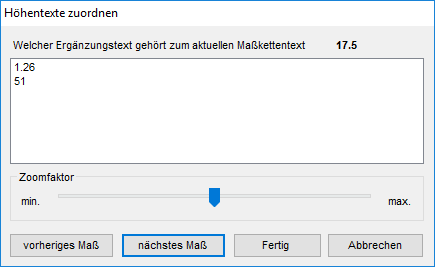

")
Bemaßungspunkte können hinzugefügt oder entfernt werden. Der Winkel und die Lage können geändert werden. Die Darstellung kann im Funktionsbereich geändert werden.
·Maßketten: Beim Ändern von Maßketten behalten verschobene Maße und Ergänzungstexte ihre Lage bei, sofern sich nicht das Maß selber ändert.
·Absolutbemaßung: Wird der Startpunkt (0,00) entfernt, ist die Klickreihenfolge bei der Erstellung entscheidend. Neuer Startpunkt wird dann der Punkt, der bei der Erstellung nach dem anfänglichen Startpunkt angeklickt wurde.
·Höhenkoten: Wird die Bezugshöhe (Höhe 1. Linie z. B. ± 1,15) entfernt, erhält die bei der Erstellung nachfolgend angeklickte Höhenlage diese Höhenangabe und wird zur neuen Bezugshöhe. Die Angabe einer anderen Bezugshöhe ist während des Änderns möglich. Alle weiteren Höhenkoten werden entsprechend aktualisiert, wobei das Höhenkoten-Symbol erhalten bleibt.
So wird's gemacht:
§Klicken Sie die Maßkette an, die Sie ändern möchten. [Welche Maßkette].
-Die einzelnen Punkte der Maßkette werden durch Kreuze gekennzeichnet. Bei Höhenkoten wird die Bezugshöhe mit markiert.
-ISBCAD wechselt in die entsprechende Funktion (z. B. M.zeic, HöKote, Winkel, ...).
§Um Punkte hinzuzufügen oder zu entfernen, nutzen Sie im unteren Funktionsbereich die Funktionen:
|
Punkte hinzufügen: Fügt der Auswahl weitere Zeichenelemente hinzu. |
|
Punkte entfernen: Markierung eines Zeichenelementes durch Anklicken des Markierungskreuzes entfernen. Alternativ: Halten Sie die Umschalttaste (Shift) gedrückt. |
|
Alle Punkte entfernen: Hebt die Auswahl der Zeichenelemente auf. Markierungen werden entfernt, ISBCAD wechselt automatisch zur Funktion Punkte hinzufügen. |


§Schließen Sie die Bearbeitung der Punkte mit Rechtsklick ab.
§Ändern oder übernehmen Sie die weiteren Eingaben für z. B. Winkel, Höhe 1. Linie, etc, indem Sie der Abfrageroutine der entsprechenden Funktion folgen.
§Bewegen Sie den Cursor, um den Ablageort zu bestimmen. [Lage ...].
Bei Höhenkoten [HöKote], die mit [einzeln setzen] oder [alle setzen] platziert werden, kann allen Höhenkoten ein anderes Höhenkoten-Symbol zugewiesen werden, während die abzusetzenden Höhenkoten am Cursor hängen [Lage alle]. Das Höhenkoten-Symbol einzelner Höhenkoten kann nach dem Absetzen aller Höhenkoten geändert werden, während die einzeln abzusetzende Höhenkote am Cursor hängt [Lage einzeln].
§Legen Sie die Maßkette mit Linksklick ab. [Lage ...].
Um Ergänzungstexte neu zuzuordnen
Ergänzungstexte, die zu einem Maß gehören, das neu berechnet wird, müssen neu zugeordnet werden.
Der Dialog Höhentexte zuordnen wird auch nach [Konst1 | Dehnen], [Konst2 | Drehen], [Konst1 | FenÄnd → löschen mit Maßkettenpunkten] usw. geöffnet.

Jedes einzelne Maß der Maßkette wird nacheinander von links nach rechts markiert. Der aktuelle Maßkettentext wird im Dialog angeschrieben.
In der Tabelle stehen die Ergänzungstexte, die neu zugeordnet werden müssen, ebenfalls in der Reihenfolge von links nach rechts.
Um einen Text dem markierten Maß zuzuordnen, klicken Sie den Text an.
Zoomfaktor
Mit dem Schieberegler kann der Zoomausschnitt vergrößert oder verkleinert werden.
Drehen Sie das Mausrad nach vorne zum Verkleinern, bzw. nach hinten zum Vergrößern. Vorher muss der Regler markiert werden.
Der Zoomausschnitt ist auf das Bezugsmaß fokussiert.
Vorheriges Maß
Klicken Sie auf diese Schaltfläche, um ein Maß zurückzugehen.
Ist eine Maßzahl markiert, zu der ein Höhentext gehört, klicken Sie in der Tabelle auf den entsprechenden Eintrag.
Nächstes Maß
Drücken Sie auf diese Schaltfläche, um die nächste Maßzahl zu markieren oder klicken Sie den Eintrag in der Tabelle an, der zu dem markierten Maß gehört.
Fertig
Der Dialog wird geschlossen. Befinden sich noch Texte in der Tabelle, werden diese verworfen.
Abbrechen
Die gesamte Aktion (Maßkette ändern bzw. generieren) wird abgebrochen.
Die angeklickte Maßkette wird wieder im ursprünglichen Zustand angezeigt.
Zugehörige Referenzen: